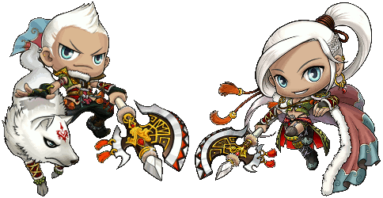

Drawing of 2 warriors with their wolf
The drawing was achieved by drawing mini ellipses which went all the way up to the top and then switched directions going back down. It was adopted from Pointillism.
